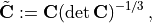
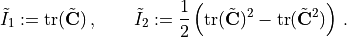
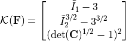
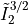
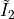
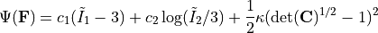
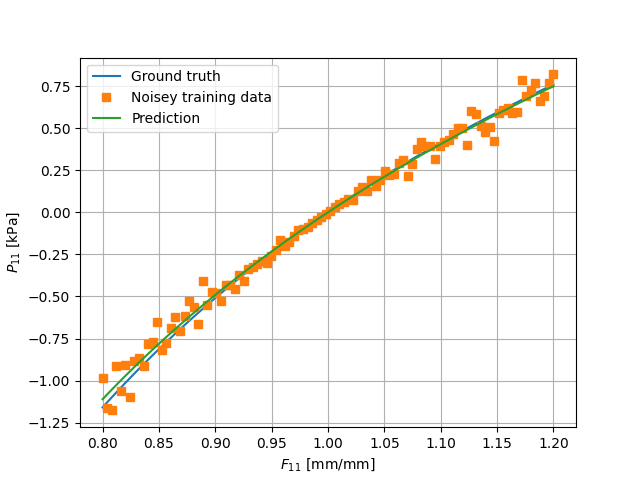

A first NCM
We have, so far, covered the basic input file schema for COMMET in Hello world: running a simulation without an NCM and the approach for defining custom material models in Defining material models using Pytorch. In this example, we demonstrate the following:
How to create a basic NCM.
How to train an NCM on some data in a supervised manner.
How to then use that NCM in a COMMET simulation.
Example files
The files for running the example can be downloaded as a single zip file here and it contains the following files:
Problem definition
The problem definition is similar to that the Hello World example (see Hello world: running a simulation without an NCM) in geometry and boundary conditions. However, we will model the material behaviour using an NCM that has been trained on some synthetic data.
Defining the NCM
The NCM will make use of isochoric invariants as the input (or the kinematic layer) and a monotonically increasing input convex neural network (MICNN) as the inner network, see the COMMET paper for more details. More specifically, we define the isochoric right Cauchy-Green tensor as

and the isochoric first and second invariants, respectively, as

We then define the kinematic layer as follows:

Here, we use

as opposed to simply
since the former is polyconvex in and the latter is not (see e.g. the Can KAN CANs paper and the references therein for comment and discussion on this).Since the inputs to the inner network as themselves polyconvex, we require that the inner network is convex and monotonically increasing with respect to its input for the resulting model to be polyconvex. One such network is obtained by using input convex neural networks, or ICNNs (see the ICNN paper or the NN-EUCLID paper) but by constraining the weights in the skip connections to be positive in addition to the weights in the pass through layers.
Overall this leads to the NCM being defined as in the following listing which is a snippet from the training.py file
1 import torch
2 from torch import nn
3 from typing import Union, List, Callable, Optional
4
5
6 class ConvexLinear(nn.Module):
7
8 def __init__(self,
9 size_in: int,
10 size_out: int,
11 use_bias=True):
12 super(ConvexLinear, self).__init__()
13 self.size_in: int = size_in
14 self.size_out: int = size_out
15 weights: torch.Tensor = torch.Tensor(size_out, size_in)
16 self.weights = torch.nn.Parameter(weights)
17
18 self.use_bias = use_bias
19
20 if self.use_bias:
21 self.bias = torch.nn.Parameter(torch.Tensor(size_out))
22
23 else:
24 self.bias = None
25
26 torch.nn.init.kaiming_uniform_(self.weights, a=5**0.5)
27
28 def forward(self, x: torch.Tensor) -> torch.Tensor:
29 result = torch.mm(x, torch.nn.functional.softplus(self.weights.t()))
30 if self.bias is not None:
31 result = result + self.bias
32
33 return result
34
35 class MICNN(nn.Module):
36 def __init__(self,
37 n_inputs: int,
38 n_outputs: int,
39 hidden_architecture: List[int] = [],
40 activation_function: Callable = torch.nn.functional.softplus):
41 super(MICNN, self).__init__()
42
43 self.n_inputs: int = n_inputs
44 self.n_outputs: int = n_outputs
45 self.activation_function: Callable = activation_function
46
47 self.architecture = [self.n_inputs] + \
48 hidden_architecture + [self.n_outputs]
49
50 self.n_hidden_layers = len(hidden_architecture) - 1
51
52 self.first_layer = ConvexLinear(self.n_inputs, self.architecture[1])
53
54 self.layers = torch.nn.ModuleList([ConvexLinear(hidden_architecture[i],
55 hidden_architecture[i+1])
56 for i in range(self.n_hidden_layers)])
57 self.last_layer = ConvexLinear(self.architecture[-2], self.n_outputs)
58
59 self.skip_layers = torch.nn.ModuleList([ConvexLinear(self.n_inputs,
60 hidden_architecture[i+1],
61 use_bias=False)
62 for i in range(self.n_hidden_layers)])
63 self.last_skip = ConvexLinear(self.n_inputs, self.n_outputs)
64
65 def forward(self, x: torch.Tensor):
66 z = self.first_layer(x)
67
68 for layer, skip_layer in zip(self.layers, self.skip_layers):
69 z = self.activation_function(layer(z) + skip_layer(x))
70
71 z = self.last_layer(z) + self.last_skip(x)
72
73 return z
74
75
76 class InvariantBasedNCM(nn.Module):
77 def __init__(self,
78 inner_network: nn.Module):
79 super(InvariantBasedNCM, self).__init__()
80 self.inner_network: nn.Module = inner_network
81
82 def get_K_from_C(self, C: torch.Tensor) -> torch.Tensor:
83
84 C = 0.5*(C + C.transpose(1, 2))
85
86 I3 = torch.det(C)
87 C = C*I3[:, None, None]**(-1/3)
88
89 I1 = torch.sum(C[:, [0, 1, 2], [0, 1, 2]], dim=1)
90
91 C2 = torch.bmm(C, C)
92 I2 = 0.5*(I1**2 - torch.sum(C2[:, [0, 1, 2], [0, 1, 2]], dim=[1]))
93
94 J = torch.sqrt(I3)
95
96 return torch.stack([
97 I1-3,
98 I2 ** (3/2) - (3 ** (3/2)),
99 (J-1) ** 2
100 ],
101 dim=1)
102
103 @torch.jit.export
104 def W_NN_from_C(self,
105 C: torch. Tensor,
106 structural_vectors: Optional[torch.Tensor] = None) -> torch.Tensor:
107 return self.inner_network(self.get_K_from_C(C))
108
109 @torch.jit.export
110 def W_NN_from_F(self,
111 F: torch. Tensor,
112 structural_vectors: Optional[torch.Tensor] = None) -> torch.Tensor:
113 C = torch.bmm(F.transpose(1, 2), F)
114 return self.W_NN_from_C(C, structural_vectors)
115
116 def forward(self, F: torch.Tensor):
117 return self.W_NN_from_F(F)
118
119
120 if __name__=="__main__":
121
122 inner_network = MICNN(n_inputs=3,
123 n_outputs=1,
124 hidden_architecture=[16, 16])
125 ncm = InvariantBasedNCM(inner_network)
Training the NCM
As a didactic example, we will train the NCM on synthetic data obtained from a Gent-Thomas material model. The Gent-Thomas model is implemented similarly to the Neohookean model in Defining material models using Pytorch. However, the strain energy density is given by

We create some synthetic training data with the following code snippet.
1 def get_stress(ncm: Union[InvariantBasedNCM, GentThomas],
2 F: torch.Tensor) -> torch.Tensor:
3 F = F.detach().requires_grad_(True)
4 energy = ncm.W_NN_from_F(F)
5 P = torch.autograd.grad(energy,
6 F,
7 torch.ones_like(energy),
8 create_graph=True)[0]
9 return P
10
11
12 gent_thomas_model = GentThomas()
13
14
15 dim = 3
16
17 F_uni = torch.zeros(100, dim, dim)
18 for i in range(dim):
19 F_uni[:, i, i] = 1
20
21 F_uni[:, 0, 0] = torch.linspace(.8, 1.2, F_uni.shape[0])
22
23
24 noise_scale = 0.1
25 P_data = get_stress(gent_thomas_model, F_uni)
26 P_data_noisey = P_data + P_data*torch.randn(P_data.shape)*noise_scale
Finally, we instantiate, train, and export the NCM to torchscript with the following code snippet
1 inner_network = MICNN(n_inputs=3,
2 n_outputs=1,
3 hidden_architecture=[16, 16])
4 ncm = InvariantBasedNCM(inner_network)
5
6
7
8 optim = torch.optim.Adam(ncm.parameters(), lr=0.5)
9
10 for i in range(4000):
11 optim.zero_grad()
12 P_pred = get_stress(ncm, F_uni)
13 loss = torch.nn.functional.mse_loss(P_pred, P_data_noisey.detach())
14 print(f"{i=}\t{loss.item()=}")
15 loss.backward()
16 optim.step()
17
18
19 traced = torch.jit.trace(ncm, (F_uni, ))
20 traced.save("ncm.torchscript")
21
22 P_pred_uni = get_stress(ncm, F_uni)
23
24
25 plt.plot(F_uni[:, 0, 0].detach().cpu(), P_data[:, 0, 0].detach().cpu(), label="Ground truth")
26 plt.plot(F_uni[:, 0, 0].detach().cpu(), P_data_noisey[:, 0, 0].detach().cpu(), label="Noisey training data", marker='s', linewidth=0)
27 plt.plot(F_uni[:, 0, 0].detach().cpu(), P_pred_uni[:, 0, 0].detach().cpu(), label="Prediction")
28
29 plt.xlabel("$F_{11}$ [mm/mm]")
30 plt.ylabel("$P_{11}$ [kPa]")
31 plt.grid()
32 plt.legend()
The resulting behaviour is displayed alongside the data in the figure below.
{kind=link}

The input file
The input file is almost identical to that in Defining material models using Pytorch, all that changes is the path to the torchscript file: "path_to_torchscript":"ncm.torchscript".
Running the simulation
If you are using docker, you can run the example by going to the directory containing the input file and running
$ docker run --rm -v ./:/data -w /data commetcode/commet_solve mpirun -n <n_procs_to_use> commet_solve a_first_ncm.jsonc
If, instead, you have build COMMET locally and it is in your path, you can run
$ mpirun -np <n_procs_to_use> commet_solve a_first_ncm.jsonc